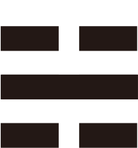
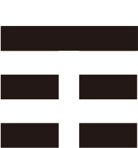
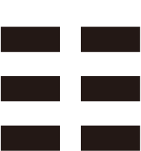

八卦とは
「道は一を生じ、一は二を生じ、二は三を生じ、三は万物を生ず」道徳経42章

大極（タオ）
「宇宙＝太極」が誕生したとき、万物はまだ分化しておらず、あらゆる矛盾や分別を包み込む混沌とした状態にありました。この太極こそが宇宙の正体であり、生まれる前の人間の状態です。それは、老子のいう「道（タオ）」であり、かたちはなく、名前もなく、言葉でも表わすことのできないものです。太極＝道は、自然の理屈、人間関係の原理として、目には見えないが、いまのわたしたちの人生の根幹にあるものと捉えられます。
陰と陽（両儀）
この太極が動いた時、混沌は『陰（--）』と『陽（ー）』の二元に分化し（両儀）、そのバランスにより宇宙のリズムが形成されるようになりました。陽は一般に積極的で強く固いものを指し、陰は消極的で柔らかいものを指します。これは電気でいうと陽子（プラス）と陰子（マイナス）の関係であり、あらゆるものは二元的な対応関係によって成立することになりました。陰陽はそれぞれが独立して存在するものではなく、陰がなければ陽はなく、陽がなければ陰もありません（互根=相互依存関係）。そして季節が巡るように陰陽のバランスは常に変化しています（消長＝どちらかが盛んになるとどちらかが衰える）。物事を理解し、バランスを保つため、物事はつねにこうした補完関係や対立関係で捉えることが重要です
陰陽のサイクル（四象）
陰陽のバランスは絶えず変動し、陽は変化して陰と結びつき、陰もまた変化して陽と結びつきます。たとえば季節でいえば、冬（老陰）から少しずつ陽が育って春になり（少陽）、さらに陽が強くなると、陰が消滅して夏になり（老陽）、そこから再び陰が生まれて日中の時間が徐々に短くなって秋を迎え（少陰）、陽が死に絶えると再び陰一色の冬（老陰）を迎えます。易はこれを両儀から派生した四象として２本の爻で表します。
さらなる分化——八卦の誕生
この四象にさらにもう一本の陰陽の線を加え、4x2=8つに分化させると八卦が生まれます。八卦は天、沢、火、雷、風、山、地によって構成されており、天と地に人の概念を加えることでより精妙な世界の実相を認識しようとしたものです（天地人）。
八卦は六十四卦が大成卦と呼ばれるのに対し、別名小成卦ともいわれます。古代中国の伝説上の帝王である伏羲（ふくぎ）によって考案されたとされていますが、真相は明らかではありません。
| 卦名 | 記号 | かたち | 自然 | 性質 | 方位 | イメージ |
|---|---|---|---|---|---|---|
| 乾 けん |
☰ | すべて陽 | 天 | 剛健・創造 | 北西 | 父性・リーダーシップ |
| 兌 だ |
☱ | 二陽の上に陰 | 沢 | 喜悦・柔和 | 西 | 少女・楽しみ |
| 離 り |
☲ | 中が空虚で陽気を発散 | 火 | 明朗・情熱 | 南 | 中女・知性 |
| 震 しん |
☳ | 二陰の下で陽が発生 | 雷 | 活動・発展 | 東 | 長男・行動力 |
| 巽 そん |
☴ | 二陽の下に陰が入り込む | 風 | 柔順、拡散 | 南東 | 長女・柔軟性 |
| 坎 かん |
☵ | 陰が陽を包む | 水 | 陥没・知恵 | 北 | 中男・困難 |
| 艮 ごん |
☶ | 二陰を陽が抑える | 山 | 静止・障害 | 北東 | 少男・堅実 |
| 坤 こん |
☷ | すべて陰 | 地 | 受容・柔軟 | 南西 | 母性・安定 |
|
かたち： すべて陽
自然象： 天
性質： 剛健・創造
方位： 北西
イメージ： 父性・リーダーシップ
|
||||||
|
かたち： 二陰が一陽を抑える
自然象： 沢
性質： 喜悦・柔和
方位： 西
イメージ： 少女・楽しみ
|
||||||
|
かたち： 中が空虚で陽気を発散
自然象： 火
性質： 明朗・情熱
方位： 南
イメージ： 中女・知性
|
||||||

かたち： 二陰の下で陽が発生
自然象： 雷
性質： 活動・発展
方位： 東
イメージ： 長男・行動力
|
||||||
|
かたち： 二陽の下に陰が入り込む
自然象： 風
性質： 柔順、拡散
方位： 南東
イメージ： 長女・柔軟性
|
||||||
|

かたち： 陰が陽を包む
自然象： 水
性質： 陥没・知恵
方位： 北
イメージ： 中男・困難
|
||||||
|

かたち： 二陰を陽が抑える
自然象： 山
性質： 静止・障害
方位： 北東
イメージ： 少男・堅実
|
||||||
|

かたち： すべて陰
自然象： 地
性質： 受容・柔軟
方位： 南西
イメージ： 母性・安定
|
||||||
この8種類の卦を上下に組み合わせた64通り（8 x 8 = 64）の六十四卦によって世の中のあらゆる現象を読み解くことができるのです。